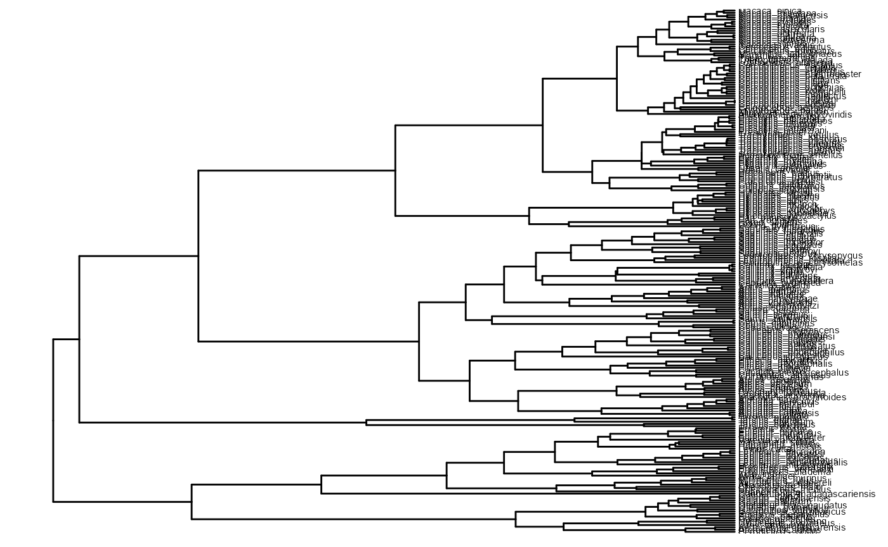
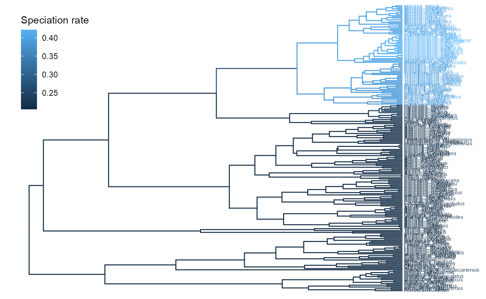
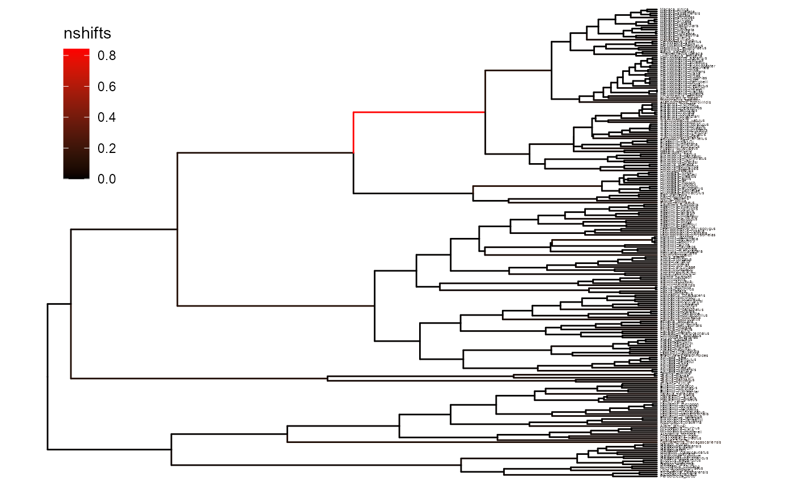

Rate analysis
Rate-analysis.RmdThis article does a simple diversification rate analysis under the lineage-specific birth-death model. See first the installation vignette for a guide on how to install this program.
First we load the necessary packages.
Next we load our favorite tree, and plot it.
data(primates)
th <- max(node.depth.edgelength(primates)) # the tree height
rho <- 0.67 # we know that the taxon sampling is around 2/3
ggtree(primates) +
geom_tiplab(size = 2) +
xlim(c(0.0, th + 10))
Setting up the model
Our model will use three hyperparameters: \(\hat{\lambda}\), \(\hat{\mu}\) and \(\eta\). What are appropriate values for \(\hat{\lambda}\) and \(\hat{\mu}\)? One approach is to use so-called empirical hyperpriors for the parameters. Meaning, we will estimate \(\hat{\lambda}\) and \(\hat{\mu}\) using a simpler model: the constant-rate reconstructed birth-death process with uniform taxon sampling.
mlrates <- estimate_constant_bdp(primates, rho)
hatlambda <- mlrates$lambda
hatmu <- mlrates$muWith a reasonable starting point for \(\hat{\lambda}\) and \(\hat{\mu}\), we can start setting up the state-dependent birth-death model. Suppose we want to allow \(\lambda\) and \(\mu\) to vary over a range of different values. Ideally, we would want to cover all possible values: the continuous range starting from 0.0 up to infinity. However, we do not now how to integrate over an infinitely large state space. Instead, we can select a finite sample of values. Let’s say \(\lambda\) and \(\mu\) are log-normally distributed, and we pick \(n\) points that are evenly spaced across the cumulative density function.
n <- 6
H <- 0.578
lambda_quantiles <- lognorm_quantiles(meanlog = log(hatlambda), sdlog = H, n = n)
mu_quantiles <- lognorm_quantiles(meanlog = log(hatmu), sdlog = H, n = n)
## Let's pick all pairwise combinations among these quantiles
pairs <- allpairwise(lambda_quantiles, mu_quantiles)
lambda <- pairs[[1]]
mu <- pairs[[2]]These values are now our \(\vec{\lambda}\) and \(\vec{\mu}\):
plot(lambda, mu, pch = 19, xlab = "lambda", ylab = "mu")What do we do for \(\eta\)? One
approach we can do is to find the maximum-likelihood estimate of \(\eta\) conditional on \(\vec{\lambda}\) and \(\vec{\mu}\). The function
optimize_eta will optimize for \(\eta\) using gradient descent. This
procedure typically needs to evaluate the likelihood (and the derivative
of the likelihood with respect to \(\eta\)) function around 20-60 times before
reaching convergence, so it is not instantaneous.
eta <- optimize_eta(lambda, mu, primates, rho)Calculating the branch rates
Now that we have our parameters \(\vec{\lambda}\), \(\vec{\mu}\) and \(\eta\), we can compute the expected rates across the branches:
td <- birth_death_shift(primates, lambda, mu, eta, rho)The return object is a treedata object, which includes
the tree and metadata. We can plot the results like so:
p1 <- ggtree(td, aes(color = `Speciation rate`)) +
geom_tiplab(size = 2) +
theme(legend.position = c(0.1, 0.8)) +
xlim(c(0.0, th + 10))
plot(p1)
Calculating the number of shifts
We can also calculate the expected number of shifts under the model.
td <- compute_nshifts(primates, lambda, mu, eta, rho)
p2 <- ggtree(td, aes(color = nshifts)) +
geom_tiplab(size = 1) +
theme(legend.position = c(0.1, 0.8)) +
xlim(c(0.0, th + 10)) +
scale_colour_gradient(low = "black", high = "red")
plot(p2)
Under the prior, we would expect \(\eta \sum b_i\) number of shifts across the phylogeny, where \(b_i\) is the branch length of branch \(i\):
The posterior estimate of the number of state changes is highly correlated with the prior, but it is not exactly the same, it is slightly less: